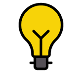

Technologies & Tools
Design:

- Wireframing
- Prototyping
- User Flows
Development:


Other skills:

- Data annotation
- Quality analysis
- Problem solving
- Leadership
Hi, I'm Dharshana, an aspiring Web Developer and UI/UX Designer based in India. I enjoy creating digital experiences that are intuitive, accessible, and visually appealing.
Before transitioning into design and development, I worked in AI data annotation and quality assurance, where I developed strong analytical thinking, attention to detail, and a user-focused mindset. These experiences continue to influence how I approach solving problems and building products.
My professional journey began in AI data annotation, where I worked on large-scale datasets, quality reviews, and privacy-focused projects. While collaborating on AI systems, I became increasingly interested in the design of the products people interact with every day.
That curiosity led me to study UI/UX Design and Web Development. Since then, I've been learning modern design principles and web technologies while building projects that strengthen both my design thinking and technical skills.
I believe great design isn't just about making things look good - it's about making them easy to understand and enjoyable to use. Every interface should reduce friction, guide users naturally, and remain accessible to everyone.

Experimenting with personal projectsI'm working toward becoming a web developer with strong UI/UX designing skills, allowing me to transform ideas into seamless digital experiences. I enjoy continuously learning, improving my craft, and taking on projects that challenge me to grow.